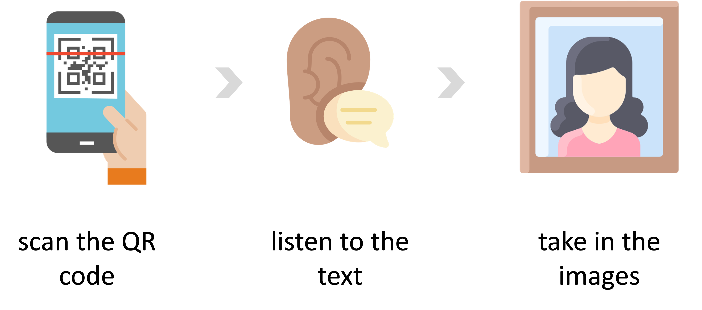

Listen to this page:
Most people are aware of the precarious state of the planet as we forge into the 21st Century: forest fires tearing across parched landscapes, houses destroyed by flooding, and record after record broken as summer temperatures soar. Today, the world largely understands the problems and increasingly appreciates the need for solutions to the climate crisis, biodiversity loss and rising social inequality. This awareness evokes fear, panic and perhaps hope in all of us.
But what about the people on the ‘front lines’ of environmental research: those who produce and translate knowledge and evidence to help us make the best decisions when dealing with environmental crises? They are painfully aware of humanity’s precarious situation and have made it their life’s work to make things better. How, then, do they feel about the state of the planet? Did they imagine things would be this way in 2021? What do they fear or hope the future holds for us and our descendants?
This project explores the emotional connections that science researchers and communicators have with the planet and their work to preserve it. Through in-depth conversations and a co-design process influenced by social science methods, these frontline workers in the global fight against environmental crises have chosen three adjectives to describe their feelings as they stand on the brink, and have selected their own images that they feel capture these words.
You are seeing them. Their fears. Their hopes.
May this not be in vain.
Scan the QR codes beside each set of images to read/listen to each person's wordsand feelings.


Visit the project website